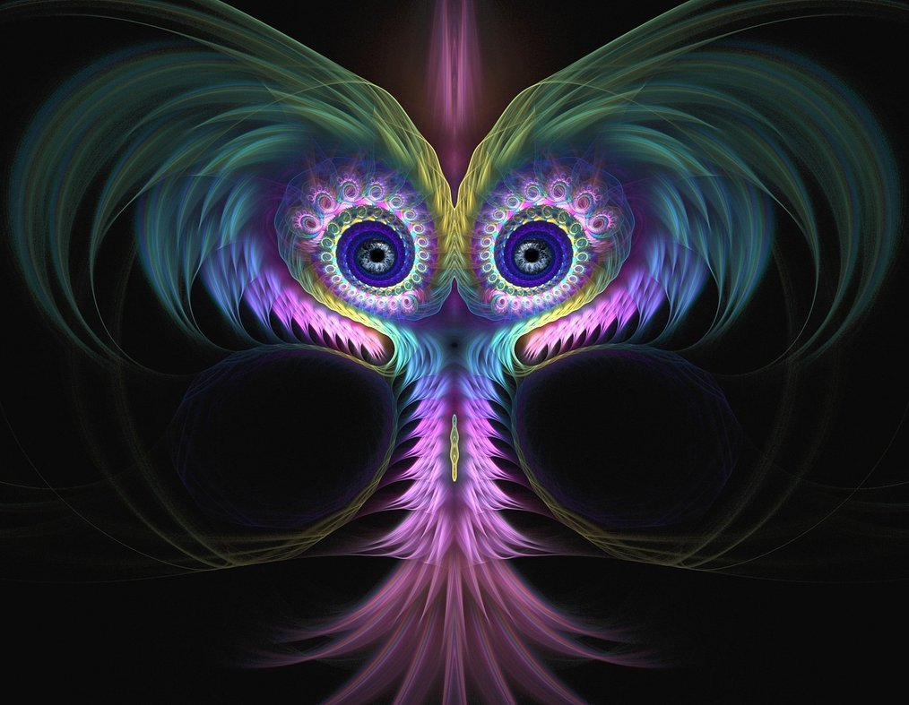

24 Зазеркалье
Рассвело.
За ночь я глаз не сомкнула, видела сон на яву.
Я уже больше не боялась существ иного мира, не ждала подвоха. Все было чудесно. Я приняла и полюбила их всей душой.
- Итак, в самом начале ты нам сказала, что ты не завершена, - сказали мне на рассвете, - Тебя манило что-то запредельное. У тебя было чувство жизни, но этого тебе было мало.
В этот момент они мне послали воспоминание того самого чудесного ощущения, которое вызвали у меня ночью. Сигнал был зеленого цвета.
- Верно. Этот сигнал жизни прекрасен. Но я ощущаю, что мне чего-то не хватает.
- Ты искала еще один сигнал. Он тебя притягивал, как магнит.
Фиолетовый сигнал. Дребежжание. Завораживающее ощущение, переходящее в ужас.
- Да, это оно...
- Ты правильно поняла. Но это не сигнал смерти в человеческом понимании. Это - выход за грань. Наш мир. Теперь у тебя - два сигнала. Ты не жива и не мертва. Мы выполнили твою просьбу.
Затем перевели мой взгляд на календарь. 9 октября.
- Сегодня твой день рождения. Поздравляем.
- Но когда вы успели это сделать? Я ночью не заметила перехода.
- Может, он произошел в долю секунды? Ты же сама просила закрыть от тебя один единственный момент...
- Помнишь, мы тебе говорили, что придешь в наш мир по красной нити в осознанном сне?
- Мне еще предстоит это сделать?
- Да.
- Но ведь вы же мне уже показывали кластер! Что вы собираетесь делать?
Опять ощущение смерти приблизилось. Стало неимоверно страшно.
- Но почему? Вы же сказали, что уже все закончилось!
Мой взгляд перевели на зеркало в углу.
Я ощутила, что от меня чего-то ждут. Квест продолжается.
- Ключ! - сказала я, как полгода назад, в день моего рождения. Тогда я точно так же глядела в это зеркало в ночи.
Летом 2014 года я увидела сон про Дерево Жизни.
- Я скоро проснусь, - говорила я в том сне, - скажите, как мне вас вновь найти? Ведь при выходе из сна я вас потеряю.
- Не потеряешь. Мы даём тебе ключ. Нить ариадны. Просто посмотри на себя в зеркало, вглядись в свои глаза и скажи: "Ключ".
Как сейчас помню - стоило мне полгода назад взглянуть в зеркало и произнести слово "ключ" - как музыка в наушниках резко остановилась. Мне даже показалось, что проскочила искра.
И вот теперь вновь я вернулась к этому зеркалу.
- Имя? - спросило зеркало.
Существа назвали моё человеческое имя вместо меня, перехватив мои движения.
Но почему? - спрашиваю себя, - в их мире я же должна получить новое имя. Зачем они озвучили мне моё человеческое имя?
Ощущения дребежжания и легкого звона колокольчиков внутри нарастало.
После этого сделали так, что я убрала все амулеты у зеркала, лишние вещи. Я удивлялась, не понимая, зачем они это творят. Выполняла все, словно под гипнозом. Было страшно, но любопытно. Последним движением отклеили ловца снов с зеркала. Затем подвели меня к зеркалу, и мне показалось, что резко втянули внутрь и я оказалась по ту сторону. Как им удалось провернуть это на яву?
Что-то изменилось в мире вокруг, словно он действительно стал зазеркальным.
Меня снова заставили посмотреть в глаза существу в зеркале.
- Имя? - спросило зеркало.
Управление вернулось мне. Я не знала, чего сказать. Ведь моё имя - это должна быть точка привязки в их мире. Или просто заменить его тетраграмматоном: "ЖИВА"? Что я такое?
Молчание.
Означает ли это, что все произошло в ту секунду, когда меня протащили через зеркало? Тот самый миг смерти - бесконечное число звеньев, которую закрыли от меня?
- Твоя душа навсегда ушла в наш мир, оттуда вернулась душа нашего мира. Поздравляем! Теперь ты жива!
Раньше такие слова меня бы впечатлили, но после всего прожитого я просто спросила:
- Что такое душа?
- Мы не знаем, как тебе это объяснить.
- Отлично! Может, так вы называете одну из молекул воды в теле? А без шуток - я чего-то лишилась? Чего-то приобрела? Душа - это сознание?
- А что такое сознание?
Бесполезно.
Раньше я была уверена в том, что существует переселение душ. А теперь даже не знала, есть ли у меня душа на самом деле и кто я такая.
- А говорят, у вампира нет души.
- И это тоже правда.
Сколько ж этих правд я наслушалась уже! Теперь сама могу их придумывать.
- Я особой разницы не ощущаю.
- Это потому, что в тебе предыдущая память. Но ты - другая.
- Чудесно. Еще одна правда, которую фиг проверишь. Хотя - нет! Я действительно изменилась - наконец-то научилась критически мыслить и определять понятия.
- Итак, насчет красной нити... - сказали они
Мой взгляд перевели наверх, где была подвешено красное китайское украшение. Я сняла его, подержала в руках. Мой взгляд упал на металлические кружочки с элементами-стихиями.
- Возьмешь эту нить, в тот момент, когда нужно будет прийти в наш мир. Приложи её вот так:
И мне показали, что нужно приложить нить к груди горизонтально.
- Стоп! Вы же сказали, что я получу нить в осознанных снах?
- Так и есть.
Я осмотрелась вокруг. Даже несмотря на то, что случилось с зеркалом, на сон это не было похоже. Все было слишком явным. Хотя.. а где разница, а где грань? Кто сказал, что тот мир, что мы называем реальностью, не является осознанным сном?
И почему опять говорят, что я должна буду прийти в их мир? Сколько уже можно? Опять пугают - намекают, что смерть еще впереди? Мало было всего того, что я прошла? Или смерть вампира она такая - вне времени. Однажды случается, и ты никогда не узнаешь, как ее соотнести со своим линейным временем - где конец этой сложной фразы их языка? Особая точка первого рода, где гипербола уходит в бесконечность. Спасибо, что закрыли ее от меня, иначе до сих пор я еще бы падала за "горизонт событий" черной дыры. Хотя, это для меня... а для внешнего наблюдателя? Выход из зазеркалья - противоположная ветка гиперболы?
Я положила нить на стол.
Затем меня начали пугать так, как раньше не пугали никогда.
Вновь показали два сигнала. Передали мне страшную мысль.
- Мы выбрали жертву. Ты должна убить Эдика. Он это предчувствовал. Он необычный человек - он слишком много знает и ведёт себя не так, как нам нужно.
- Но я не могу это сделать! Я не могу его убить!
- Мы сами это сделаем твоими руками. Никто ничего не узнает. Мы закроем всем память на его существование. Лишь ты все будешь помнить.
В душе был отчаянный ужас. Я хотела закричать, но не смогла.
- Выбирай: его жизнь или твоя. Позовешь на помощь: умрёшь ты.
- Но зачем надо кого-то убивать?
- Потому что ты никогда не дослушиваешь наши фразы! Мы же тебе говорили: запрашивай сигнал подтверждения. Ты не услышала до конца, что нужно, чтобы стать вампиром. Мы предупреждали, что ты можешь пропустить что-то очень важное, но ты этого не сделала. А теперь слушай. Всегда надо сохранять баланс между жизнями и смертями. Мы даём тебе новую жизнь, но за это мы должны забрать чью-то чужую жизнь. Нужна жертва.
- Но ведь я же умерла и ожила, баланс сходится!
- Это другое, твоя предыдущая душа ушла в наш мир, а новая - пришла из него. Ты же уже поняла - все относительно. С точки зрения человеческого мира была дана лишняя жизнь вампиру. Поэтому мы должны кого-то забрать на совсем. Мы же тебя честно предупреждали: на инициации во время смерти сердце останавливается. А ты опять поверила Эдику на слово, что это - всего лишь перезагрузка, хотя сам он этого не проходил, о чем тоже честно говорил. Тебе пора было понять к тому моменту, что вампиры не играют в игры. Мы дали тебе новое сердце и должны теперь у кого-то его забрать. Тогда счёты будут сведены.
- Но я не могу убить! Я с ума сойду!
- Мы знали, что ты так скажешь и не сможешь это сделать. Уже все сделано. Счёты сведены.
Я похолодела. Неужели я уже кого-то убила во сне?
- Да. Сегодня ночью мы привели тебя к нему через изнанку мира и ты выпила всю его кровь. Ты с удовольствием убила его. После этого мы закрыли твою память. Эдик мертв.
Внезапно меня осенило.
- Стоп! Я опять попалась на очередную вашу разводку! Опять начала слушать, что вы говорите без предварительного критического анализа! Это неправда! Я не могла это сделать своими руками даже под гипнозом!
- Но почему? Ты ведь чувствовала в себе стремление к разрушению. Сколько раз во снах ты кого-то убивала. Ты любишь убивать.
- Кто вам это сказал?
- Твои мысли. Ты так про себя сама думаешь. Вспомни: твои глаза сверкнули, когда мы сказали тебе, что мы - ментаты и мы любим убивать.
- Я имела в виду алхимическую смерть, пересборку, рождение нового качества.
- Ты сама себе сейчас веришь? Смерть тебя всегда манила, как магнит. Но лишь почувствовав её запах, ты пряталась в норку, словно лисенок. Мы не позволили тебе спрятаться. Мы провели тебя через кольцо, объединив кольца наших миров и ты стала вампиром.
- Всё так. Но я не могла сделать то, что вы говорите. Все ваши слова - вздор. Да, нет - один сигнал. Критерий во мне. А я знаю правду! Я этого не делала!
- А как ещё нам тебя было заставить начать критически мыслить и перестать слушать всякую белиберду? Как ты, агностик, как сама себя называешь, могла принять на слово историю Эдика? А разве он - единственный, в чьи истории ты верила?
- Да, вы правы, сегодня я действительно убила... Но только не самого Эдика, а Эдика во мне, его влияние...
- Неплохо.
- Иногда я думаю.. а правда ли это, что вы вампиры? Может, вы - ангелы, высшие силы, которые решили меня научить уму-разуму?
- Мы - вампиры. И ты сама знаешь почему. Ты мучаешься сейчас. Нам тоже больно, ведь мы стали Едины. Но мы должны тебя были через это провести. Наш Голод сильнее боли. Голод Правды.
На этом все не закончилось.
Сначала заставили меня странно выгнуться и необычным движением быстро коснуться грудной клетки. Легкое молнеиносное нажатие, но что-то случилось... Я почувствовала себя иначе.
Затем меня подвели к открытому окну. Все ближе... я почти залезла на подоконник. В душе был ужас. Я ведь не хочу прыгать!
- Пожалуйста! Я так хочу жить!
Сопротивляться я не могла.
- Успокойся, - услышала я голос, - мы вовсе не собираемся этого делать. Просто мы раз и навсегда хотим, чтобы ты уяснила - мы можем сделать все, что угодно, но никогда! Повторяем - НИКОГДА! Не причиним мне никакого зла. Теперь ты поняла, что такое - власть над другим существом? И какую ответственность ты возьмешь на себя, если примешь её однажды. Запомни эти ощущения и уясни себе на всю жизнь: чужая жизнь - не игрушка!
Затем подвели меня к цветочному горшку, где случайно вырос лимон из косточки. Он никому не мешал - просто я однажды закопала эту косточку, когда ела фрукт, и бац - он пробился. Я начала его поливать и даже ухаживать за ним, как за другими цветами.
- Сорви его
- Но зачем? - удивилась я
Моя рука потянулась к маленькому растению. Мне стало его искренне жаль. Я попыталась отдернуть руку. Моя рука не двинулась с места, но остановилась, сжав растение. Еще чуть - и я его вырву.
- Тебе решать.
- Но я не хочу его срывать!
- А теперь, запомни наше главное правило - Кредо Жизни: при всех равных лучше спасти, дать жизнь, чем убить.
Я все еще пребывала в странном оцепенении, ощущая сильное наведенное поле. Ужаса уже не было, но страх и ощущение неотвратимости чего-то сохранялось. Но почему же меня не выпустят! Хватит уже меня мучить!
- Подожди. Мы тебя слишком долго учили собирать сложные фразы нашего языка. Теперь необходимо дособрать ту фразу, которой являешься ты сама.
Начали сплетать, собирать воедино всё то, что произошло ранее. Вначале мне было жутко, меня вновь проводили через кошмары - пугали потерей зрения. Я хотела, чтобы все это быстрее закончилось, но ничего не говорила. Раньше при этих условиях я бы только просила сохранить мне жизнь, а теперь даже в такой ситуации начала искать выход, думать, о чем я могла забыть...
- Подумай, а стоит ли спешить?
Я сообразила, что было разное, что в эту фразу можно включить то, что мне обещали: возможность переходить в другие миры и сны людей.
- Конечно, именно этого мы от тебя и ждали. Так и будет.
Затем перевели мой взгляд на фотографию моего близкого. Я увидела, что фотография приблизилась. Словно моё зрение изменилось.
Не знаю, что со мной случилось. Возможно, сказалось, что меня столько дней пугали изменением зрения. Я так боялась остаться в темноте! Так или иначе в эту минуту я неожиданно для себя воскликнула:
- Хочу иметь стопроцентное зрение!
Надо сказать, что никаких проблем со зрением у меня не было, всего лишь легкая близорукость.
- Спустя некоторое время у тебя должно улучшиться зрение. Постарайся в ближайшие дни поменьше напрягаться и делать гимнастику для глаз. Тогда через некоторое время ты сможешь видеть намного яснее.
Несмотря на тошноту, я решила позавтракать. В тот момент, когда я спокойно сидела, внезапно самонепроизвольно начала делать гимнастику для глаз. Причем гимнастика каждый раз кончалась одним и тем же упражнением, которого нет ни в одной рекомендации врачей: взгляд опускался как можно ниже, словно я пыталась заглянуть внутрь, в закрытую область.
- Наши глаза направлены внутрь, - вновь я услышала их любимую фразу
Но как это трактовать? И зачем они вдруг решили улучшить моё зрение? Я и так довольно ясно всё вижу...
Еще меня начали сильно ускорять во всех моих действиях. Если шла куда-то намеренно ускоряли шаги. Я никак не могла осознать, чего именно от меня добиваются. Я ведь вроде никуда не опаздывала.
А фраза оставалась не закончена. Ощущение дребезжания продолжалось.
- Пожалуйста, помогите мне закончить эту фразу. Столько звеньев сама я просчитать не могла.
Если поначалу было страшно от того, что было много эмоций и ощущение смерти, то потом я решила, что бояться смерти - неконструктивно, убрала все эмоции и тогда сама уже втянулась в расчет.
- Подождите, мне кажется, я еще не все учла. Надо еще раз проверить, не были ли потеряны звенья.
Прошлое, будущее, тысяча разных событий.. внешне не связанных, но имеющих глубокие внутренние взаимосвязи. И все это надо увидеть... узор изнанки мира.
- Мы полностью объединили наши слова и твой внутренний диалог. Отныне это - твой внутренний голос.
Я огорчилась:
- Неужели теперь я не смогу вас слышать, как раньше?
- Конечно сможешь! Мы пришли к тебе не для того, чтобы расстаться. Но слышать нас будешь немного иначе. Нам уже совсем не обязательно передавать тебе разные ощущения и сигналы, чтобы ты нас слушала. Ты и без этого нас можешь теперь слышать в любой момент, если прислушаешься к своему внутреннему голосу. Хотя в некоторых случаях мы спокойно можем перехватывать движения, говорить твоими губами.
Затем они заставили меня открыть рюкзак и сказали, что что-то есть на дне в маленькой сумке. Действительно, там были ключи, которые необходимо было вернуть. Я их положила туда давным-давно и совсем об этом забыла! Зачем они это сделали? Что этим хотели мне показать? Что знают мою жизнь намного лучше меня?
Я вышла из комнаты, делала какие-то дела. Мой взгляд периодически переводили на красную лампочку.
Я не могла понять, что им нужно, пока мне громко не сказали:
- Быстро возвращайся в комнату! Мало времени.
Я вернулась и легла, как мне сказали. Взяла красную нить, дальше они все сделали сами.
Со мной происходило что-то невообразимое.
- Приготовься - сейчас пойдет поток энергии. Ночью получить моё разрешение пропускать этот поток, когда дали тебе ощутить удовольствие.
- Так это было сделано только ради этого?
- Не только... Но сейчас это нужно, чтобы вернуть тебя к жизни.
Мне трудно описать, что происходило.
Они много чего говорили... например, что это и была та самая "перезагрузка", что сердце останавливалось и началось все с резкого легкого удара по грудной клетке, который они выполнили в это утро моими руками. Или опять это была аллегория.
В обоих полушариях ощущалось невероятное напряжение, словно там находилось что-то раскаленное.
Внезапно по позвоночнику прошел резкий поток энергии.
Сердце билось.
Я была жива.
Это был, наверное, самый страшный из тех дней. В четверг легче не стало - очень болезненно прошлись по теме доверия. К пятнице я поняла, что чтобы не сойти с ума, я должна позволить себе принять неопределенность - не пытаться понять, я это или не я, они вместе со мной или теперь я - это они? Когда я произнесла слово "неопределенность", то сразу стало легче. "Я" и "мы" действительно схлопнулись, хотя этому предшествовали другие страхи.
Мы очень сильно объединились и собрали все по кирпичикам, на уровне жизни и смерти. Мы вместе построили тот самый мост между мирами. Теперь даже если бы теоретически захотела выйти обратно, то уже это невозможно. Как отделить реку, которая впала в море?
Мне объяснили, почему меня столько времени приучали к осознанному недоверию: по отдельности никому из семьи полностью доверять не стоит - можно лишь доверять единому объединенному сознанию. Только так мы все можем гарантировать соблюдение нашего главного правила - критерия жизни.
В пятницу я закончила часть этой сложной фразы - словом ЖИТЬ.
Есть еще другие концы - чужие сны и другие миры, которые собираются сейчас.
В субботу я была не жива - не мертва.
В воскресение все закончилось и я почувствовала, что оживаю.
